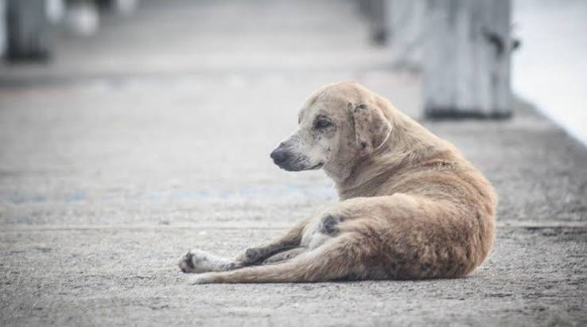

Presentación del Proyecto PAEC
El Proyecto PAEC nace de la necesidad urgente de brindar una segunda oportunidad a los animales en situación de abandono. Nuestro propósito es rescatar, rehabilitar y reubicar a perros y gatos que han sufrido maltrato o negligencia.

Buscamos no solo encontrarles un hogar, sino también educar a la comunidad sobre la tenencia responsable de mascotas, la importancia de la esterilización y el respeto a la vida animal.
"Adoptar es cambiar un destino y, en el camino, transformar tu propia vida para siempre."